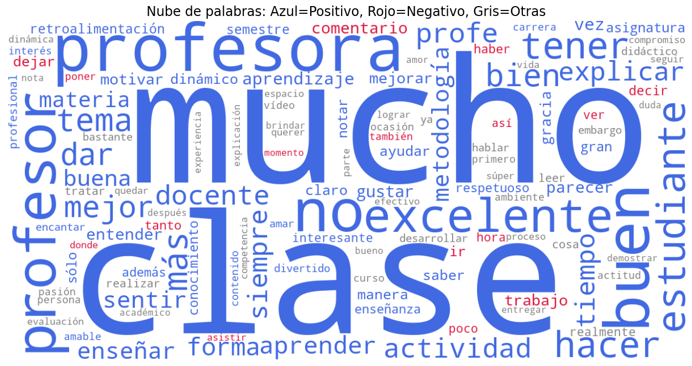
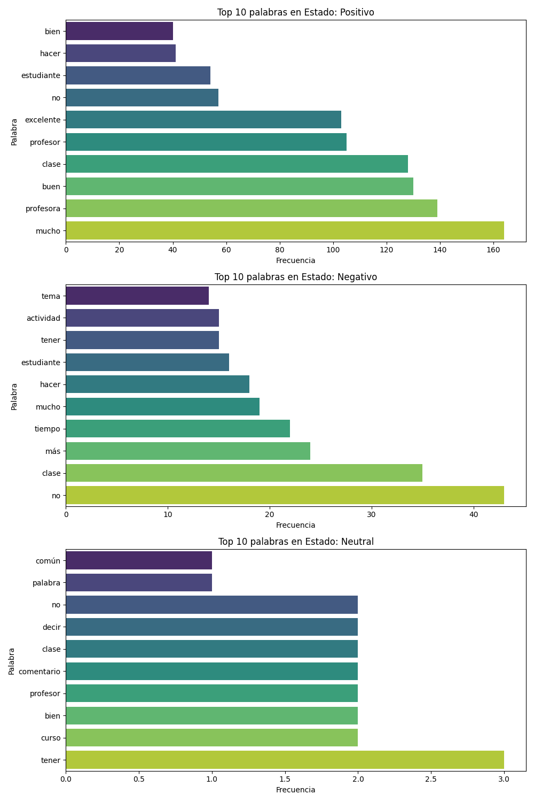
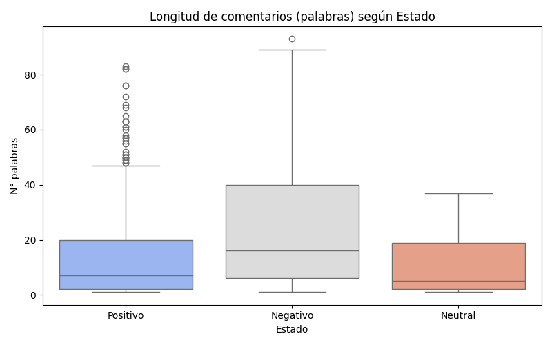

Evaluación de Comentarios Docentes (EVADOC) - Reporte Dinámico
Visualización de las palabras más frecuentes. El color indica si la palabra es más común en comentarios positivos (azul) o negativos (rojo).
Palabras más comunes para cada tipo de comentario.
Comparación de la cantidad de palabras usadas en los comentarios según su estado.
| n_palabras | |
|---|---|
| count | 480.000000 |
| mean | 16.237500 |
| std | 18.902172 |
| min | 1.000000 |
| 25% | 3.000000 |
| 50% | 8.000000 |
| 75% | 23.000000 |
| max | 93.000000 |
| Profesor | n_comentarios |
|---|---|
| MARIA ALEJANDRA ARIAS MURILLO | 37 |
| Alana Farrah Faye Del Socorro Roa Narvaez | 34 |
| JOSEF AMON MITRANI | 26 |
| Breiner Saleth Torres | 23 |
| ANDRES FERNANDO FORERO GOMEZ | 19 |
| WENDY PAOLA VALDEZ JIMENEZ | 16 |
| Teresa De Jesus Benitez Velasquez | 15 |
| Rodrigo Alberto Rivera Parras | 15 |
| Angelica Maria Rojas Chavez | 15 |
| Liliana Patricia Mendoza Barraza | 14 |
| Profesor | n_comentarios |
|---|---|
| Teresa De Jesus Benitez Velasquez | 10 |
| Sergio Alvarez Uribe | 7 |
| Yanuacelly Cristina Guariguata Birriel | 7 |
| Jesus David Guerra Lyons | 5 |
| MARIA ALEJANDRA ARIAS MURILLO | 5 |
| MAR STELLA ORTEGA GONZALEZ- RUBIO | 4 |
| ADRIANA MARIA PEREZ CEDEÑO | 3 |
| Alana Farrah Faye Del Socorro Roa Narvaez | 3 |
| Breiner Saleth Torres | 3 |
| Helda Toloza Pimentel | 3 |